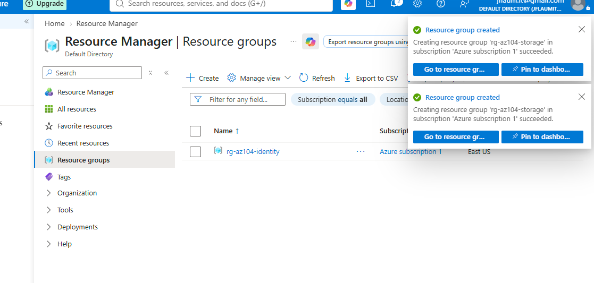
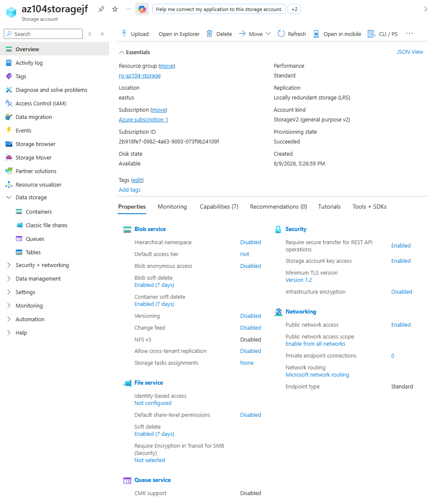
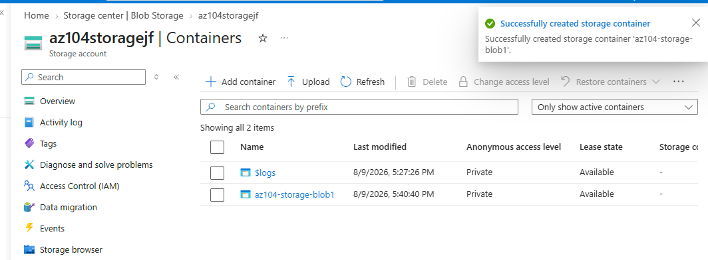
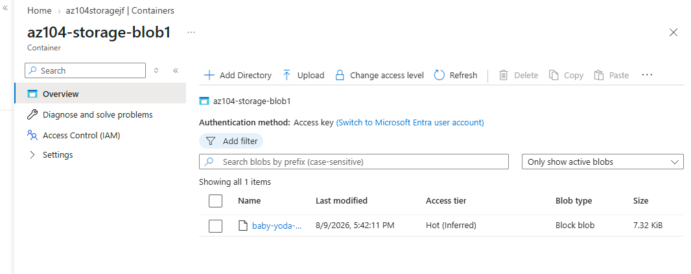
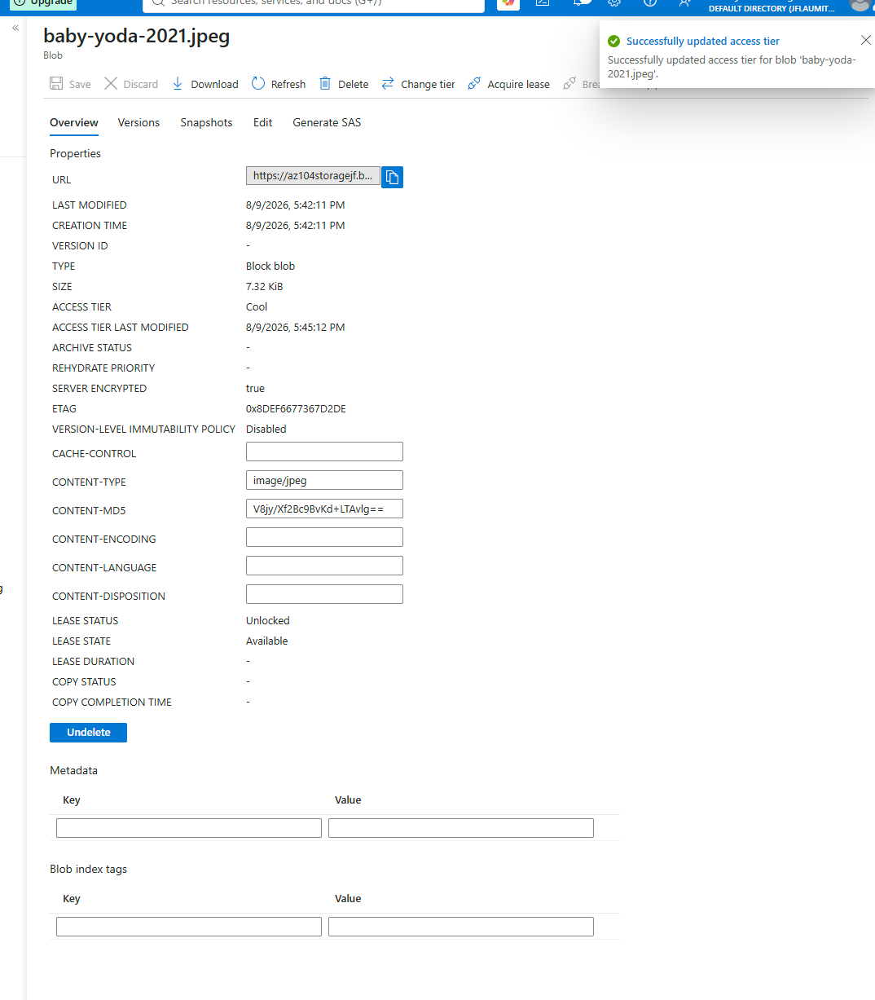

Building a storage account from scratch with LRS redundancy, creating a blob container, uploading a real file into it, and changing that file's access tier from Hot to Cool. The first lab in the Storage domain, and the foundation the SAS token and lifecycle labs build on top of.
Azure offers four main redundancy tiers, each trading cost for durability. LRS (Locally Redundant Storage) copies data three times within a single datacenter, protecting against hardware failure but not a datacenter or regional outage. ZRS (Zone-Redundant) spreads those three copies across separate availability zones in the same region, protecting against a datacenter-level failure at a higher cost. GRS (Geo-Redundant) adds asynchronous replication to a paired secondary region, protecting against a regional disaster, at a further cost increase. GZRS combines zone and geo redundancy for the highest durability and the highest price.
LRS was the right choice here because this is disposable lab data that gets rebuilt from Terraform and Bicep definitions checked into this repo. If the datacenter hosting it disappeared entirely, the fix is redeploying the code, not restoring from a geo-replicated copy. Paying for ZRS or GRS protection on data that costs nothing to regenerate would be optimizing for a failure mode that doesn't actually threaten anything important here.
Hot tier has the highest storage cost and the lowest access cost, built for data touched frequently. Cool tier lowers the storage cost in exchange for a higher access cost and an expected minimum retention around 30 days, built for data accessed occasionally but not urgently, like older logs or infrequently opened backups. Archive tier drops storage cost to the lowest point but requires an explicit rehydration step, taking hours, before the data can be read again at all.
Cool was the right comparison point for this lab rather than Archive, because the goal was to demonstrate the tier mechanism and its immediate effect on a blob's properties. Cool still allows instant reads, so the change was visible and verifiable in the same session. Archive would have required a rehydration wait that doesn't teach anything additional about how tiering itself works, and realistically matches fewer scenarios than Cool does for data someone might still want to open on short notice.
First real Storage-domain build, including a real mistake caught and fixed mid-lab.





"If you can build it again tomorrow without looking at yesterday's code, you've learned it. If you need to copy and paste it again, you've only completed a tutorial."
I am learning Infrastructure as Code deliberately, specifically Terraform and Bicep, rather than treating them as copy-paste snippets. The code below reflects actual understanding of each resource, not just reproduced boilerplate.
Storage accounts, containers, and even blob metadata are all native ARM resource types, so the full chain from account down to access tier can be expressed directly in Bicep. Actual file upload still requires the CLI, PowerShell, or portal, since Bicep deploys infrastructure, not file contents.